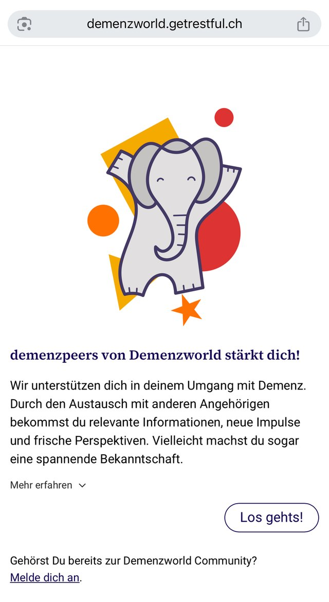

Kompetenzzentrum für Peer-Angebote in der Schweiz
 Wissenschaftlich begleitet
Wissenschaftlich begleitet
Erfahrungswissen wirksam machen. Unter deinem Namen.
Wir bauen mit dir ein Peer-Angebot auf, in dem Betroffene voneinander lernen, und betreiben es unter dem Namen deiner Organisation weiter.
Peer-Angebot starten →Wir digitalisieren Patientenpfade und entwickeln Blended-Care-Angebote für Spitäler, Kliniken und Institutionen. Von der Konzeption bis zum Betrieb.
Projekt besprechen →Deine Plattform
Läuft unter deiner Marke, restful bleibt im Hintergrund.

Wissenschaftlich begleitet12Organisationen arbeiten mit uns
Qualität im Matching
Fachpersonen begleiten das Matching. Kein Algorithmus.
🔒 Nach Schweizer Datenschutzgesetz (revDSG)
 Raphael Reber
Raphael Reber Sulamith Scheurer
Sulamith Scheurer Stefan Niederhauser
Stefan Niederhauser Melanie Spescha
Melanie Spescha Lona Gaugler
Lona Gaugler Silvan Jost
Silvan Jost